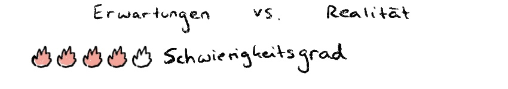
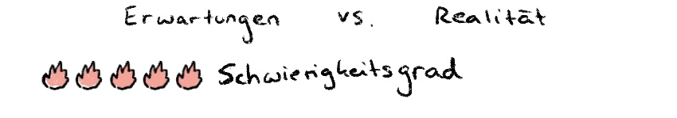
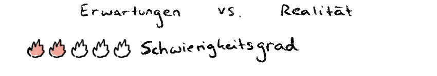
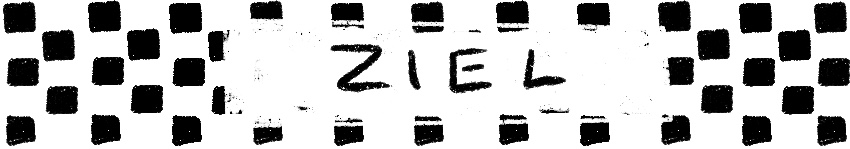

Tag 1
Für meine Erste Herausforderung, habe ich mir vorgenommen zu lernen, wie man eine Website erstellt und codiert. Hierfür habe ich einen Online Kurs angeschaut und jeden Tag daran gearbeitet. Auf der Website möchte ich meine 7 Tage Challenge mit einem Visuellen Tagebuch dokumentieren. Ich wollte schon lange lernen, wie man html code schreibt und habe es aber immer vor mir hergeschoben.

Tag 2
Am zweiten Tag der Challenge bin ich alleine ins Kino gegangen. Zeit alleine zu verbringen ist an sich kein Problem für mich, aber an öffentlichen Orten fühle ich mich dann immer sehr beobachtet.
Tag 3
Für den dritten Tag habe ich mir vorgenommen, eine neue Freundschaft zu schließen und jemanden uaf einen Kaffe einzuladen, mit dem ich vorher noch nie Zeit verbracht habe.
Tag 4
Am vierten Tag der Challenge wollte ich meine Angst vor Höhe beziehungsweise dem Fallen überwinden. Dafür bin ich mit Freunden Bouldern gegangen.
Tag 5
Für den fünften Tag hatte ich nicht wirklich etwas geplant. Deshalb habe ich spontan im Bus beschlossen jemanden fremdes anzusprechen und zu versuchen eine Konversation aufzubauen.
Tag 6
Ich lerne bereits seit einem 3/4 Jahr Koreanisch. ALlerdings fällt es mir sehr schwer vor anderen zu sprechen, da ich mit niemandem üben kann. Für den sechsten Tag hatte ich mir daher vorgenommen mit einer Online Nachhilfe Koreanisch zu sprechen.
Tag 7
Für den letzten Tag der Challenge wollte ich meinen Körper etwas fordern, weshalb ich früh morgends im Winter bei uns in den See gesprungen bin. Gleichzeitig hatte ich eine irrationale Angst vor den Fischen.
